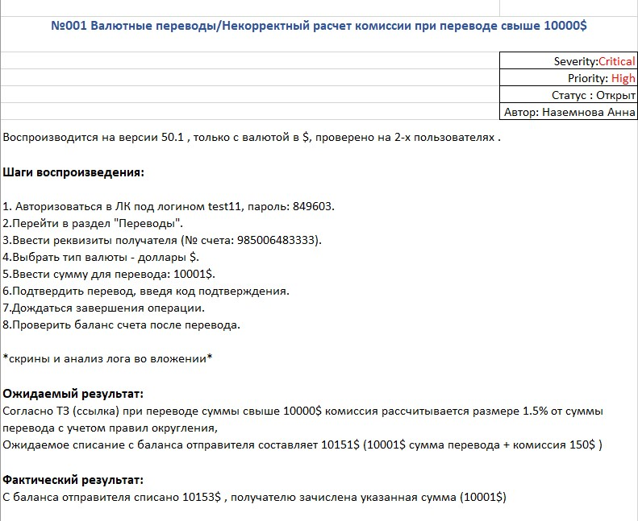
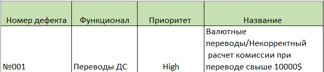

Объектом тестирования является веб-приложение банка N
2.Функции , подвергаемые тестированию
1 Авторизация и аутентификация в онлайн-банкинге
2 Раздел ‘Инвестиции’
-открытие индивидуального инвестиционного счета
-покупка и продажа акций и валюты
3 Раздел 'Страхование'
- расчет автострахования
- расчет медицинской страховки
- расчет страхования недвижимости
- страховой калькулятор
4 Перевод ДС
-перевод между своими счетами
-валютные переводы
-курсы валют и расчет комиссий
3.Используемые виды тестирования
Автоматизированное тестирование:
-смоук тестирование
-регрессионное тестирование
Ручное тестирование:
-функциональное тестирование
-тестирование UI
-тестирование документации
-интеграционное тестирование
4.Стратегия тестирования
Тестирование сервиса планируется проводить на test стенде
1 Оценить задачу на соответствие критериям готовности задач на тестирование для взятия задачи в тестирование . При невыполнении условий о готовности аналитики или разработки по задаче –задача возвращается на доработку ответственному лицу , иначе переходим на шаг 2
2 Взять задачу в ручное тестирование , подготовить тестовую модель ,тестовые данные ,тестовые сценарии , информацию разместить в confluence
3 Опубликовать результаты тестирования задачи в проектном пространстве
4 Взять задачу на покрытие автотестами , опубликовать результаты тестирования задачи в проектном пространстве
5 Перед релизом происходит регрессионное тестирование
6 Проверить что выполнены все критерии окончания тестирования
5. Сценарий тестирования
6.Состав команды
Наземнова Анна –ручное тестирование
Иванов Иван –автоматизированное тестирование
7.Управление инцидентами
Информация о всех дефектах собирается , управляется и анализируется в системе Jira
Источники дефектов : Дефект тестовой среды , дефект промышленной среды .
Критичность дефектов
8.Оценка трудозатрат в md
9.Используемые инструменты и технологии
Для автоматизированного тестирования : Python 3 , Pytest ,Selenium ,grafana
Для ручного и интеграционного тестирования : swagger , postman , SoapUI, MySQL , RabbitMQ
Для анализа логов : kibana ,monlog
Система багтрекига : Jira
Документация : confluence
10.Критерии:
10.1 Критерии начала тестирования
Задача по выпуску и сборке новой функциональности завершена , нет зависимостей , останавливающих тестирование
Готова среда для тестирования
-основные функциональные возможности ПО готовы для тестирования
-имеется документация по требованиям , проработана аналитика
-билды доступны для использования
-готовность тестовых стендов
проведены необходимые настройки и доработки от смежных систем
Появились изменения/дополнения в существующей функциональности
Код проверен с осуществлением Unit тестов
10.2 Критерии качества
Продукт не содержит critical и blocker дефектов
Продукт работает в соответствии с требованиями и ТЗ
Продукт отвечает неявным требованиям ( безопасность , удобство пользования)
10.3 Критерии окончания тестирования
Выполнено 100% тестовых сценариев
Обнаруженные дефекты заведены в Jira , привязаны к тест-кейсам , дефекты с приоритетом blocker и critical исправлены и ретестированы
Автотесты (регресс и смоук) успешно пройдены на тестовом стенде
Допусткается наличие дефектов с приоритетом medium и low , исправление которых возможно в очередных поставках приложения
Поставка необходима в кратчайшие сроки
10.4 Критерии приостановки тестирования
Обнаружение дефектов при выполнении смоук тестирования и регрессионного
Обнаружение блокирующих дефектов , в том числе интеграционных компонентов
Обнаружение дефектов в ходе тестирования , составляющих не менее 40% от объема реализуемых
11.Оценка рисков
12.Метрики
Покрытие API методов
pAPI= Количество покрытых методов *100%
Процент тестов в статусе Успешно
%Успешно=Пройденные тесты *100%
Процент тестов в статусе Провалено
%Провалено =Проваленные тесты *100%
Процент тестов в статусе Заблокировано
%Заблокировано =Заблокированные тесты *100%
Время на тестирование сборки
Дата завершения тестирования-Дата начала тестирования –среднее , в раб. днях
Тест-кейс
тест-кейс №1
Перевод ДС через сайт в валюте свыше 10.000$
Предусловия: Активный тестовый номер , 2 тестовых счета , баланс пользователя test11 минимум 10151$
Баг-репорт

SQL
--Создать БД
create database testshop;
--Создать таблицу 1
create table goods (id integer not null auto_increment primary key, Name varchar (50), price float, category varchar (50), provider varchar (50));
insert into goods (id , Name , price , category , provider)
values
(2,'шорты',420.60 , 'одежда' , 'ООО Текстиль'),
(3,'шуба',50000 , 'одежда' , 'ИП Андреев'),
(4,'диван',20000 , 'мебель' , 'ОАО Уют'),
(5,'Чашка',200.50 , 'одежда' , 'ООО Керамика'),
(6,'платье',1200 , 'одежда' , 'ООО Текстиль'),
(7,'Тарелка',450 , 'посуда' , 'ООО Керамика'),
(8,'джинсы',1500.40 , 'одежда' , 'ИП Иванов');
--Создать таблицу 2
create table provider (id integer not null auto_increment primary key, Name varchar (50), privilege bool, country varchar (50))
insert into provider (id , Name, privilege, country)
values
(1,'ООО Текстиль',1 , 'Россия'),
(2,'ИП Андреев',0, 'Грузия' ),
(3,'ОАО Уют',1 , 'Россия' ),
(4,'ООО Керамика',0 , 'Армения' ),
(5,'ИП Иванов',0 , 'Уругвай' )
--Вывести Наименование поставщика из таблицы 1 и страну поставщика из таблицы 2
select goods.Name ,provider.country from goods right join provider on goods.provider =provider.Name
--Изменить наименование поставщика в таблице 1 по условию выборки из таблицы 2
update goods set provider = 'ООО Вещи' where provider = (select name from provider where country ='Уругвай')
--Хранимая процедура (увеличить цену на 5% в таблице 1 по условию выборки страны поставщика из таблицы 2)
CREATE PROCEDURE testshop.Update_price ()
BEGIN
update goods set price = price * 1.05 where provider in (select Name from provider where country = 'Россия');
element = browser.find_element(By.CSS_SELECTOR, '#alerts-container > div.alert.alert-success')
message_text = element.text
if "Перевод выполнен!" in message_text:
print("Тест пройден: перевод выполнен успешно")
else:
print("Тест провален: перевод не выполнен")
browser.quit()
Отчет о тестировании
1.Объект тестирования
Объектом тестирования является веб-приложение банка N
2.Команда тестирования
Наземнова Анна
Иванов Иван
3.Функционал
В ходе проведения тестирования были выполнены проверки следующих функций:
1 Авторизация и аутентификация в онлайн-банкинге
2 Раздел ‘Инвестиции’
-открытие индивидуального инвестиционного счета
-покупка и продажа акций и валюты
3 Раздел 'Страхование'
- расчет автострахования
- расчет медицинской страховки
- расчет страхования недвижимости
- страховой калькулятор
4 Перевод ДС
-перевод между своими счетами
-валютные переводы
-курсы валют и расчет комиссий
4.Выполненные проверки и результаты
Проведено тестирование на соответствие релиза требованиям . Ниже приведен список выполненных проверок:
Данные по дефектам

5.Выявленные проблемы и риски
Недостаточная информация о рисках и доходности инвестиционных продуктов
Ошибки при расчете комиссий, что может привести к неправильным ценам или платежам.
Периодические задержки при совершении переводов между своими счетами, что может привести к ошибкам в проведении операций.
Неполнота информации о курсах валют и комиссиях за переводы
6.Рекомендации к проблемам и рискам в тестировании функционала банка
Предоставить подробную информацию о рисках и потенциальной доходности инвестиционных продуктов
для обеспечения прозрачности и уверенности клиентов.
Обеспечить актуальность и полноту документации по комиссиям за переводы.
Включить подробные описания алгоритмов расчета, параметров и исключений
Внедрить систему мониторинга и автоматического уведомления о любых задержках или проблемах при совершении переводов
Предоставить подробную информацию о курсах валют и комиссиях за переводы для обеспечения прозрачности и доверия клиентов
7.Заключение
На основании проведенного тестирования функционала банка можно сделать следующие выводы о готовности к
релизу и соответствии критериям окончания тестирования:
В ходе тестирования были выявлены некоторые проблемы и риски, но большинство из них имеют
не критичный характер и могут быть решены в кратчайшие сроки.
Вопросы, связанные с недостаточной информацией о рисках инвестиционных продуктов и ошибками при расчете комиссий, требуют дополнительной работы,
но не представляют существенных препятствий для релиза
Остальные проблемы, такие как периодические задержки при совершении переводов и неполнота информации о курсах валют, могут быть решены в рамках последующих релизов или обновлений
Большинство функций банка успешно протестированы и подтверждено их соответствие заявленным требованиям и спецификациям.
Дополнительные проверки и тестирование могут быть проведены после релиза для обеспечения стабильной работы и выявления дополнительных проблем
несмотря на выявленные проблемы, функционал банка готов к релизу, при условии того, что предложенные рекомендации будут реализованы в ближайшее время. Тестирование было выполнено в полном соответствии с поставленными целями и критериями окончания, что обеспечивает высокий уровень доверия к стабильности и качеству продукта перед его выпуском.